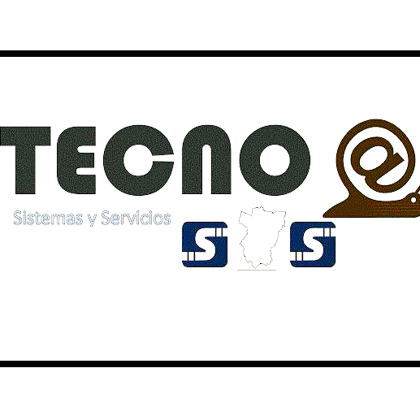

"Tecnoa sistemas y servicios san salvador de jujuy"

Hola!,
Soy ALVARO ALVAREZ DUEÑO DE ESTA MARAVILLOSA EMPRESA
Tenemos mas de 15 años de experiencia trabajando en el area de servicios electronicos e informaticos
Déjame contarte un poco de nosotros